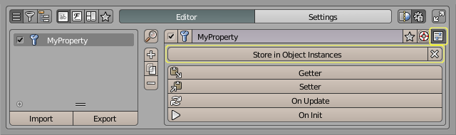
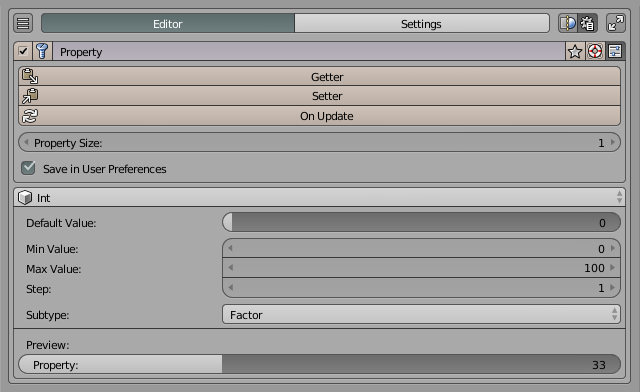
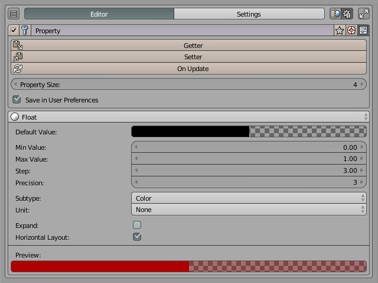
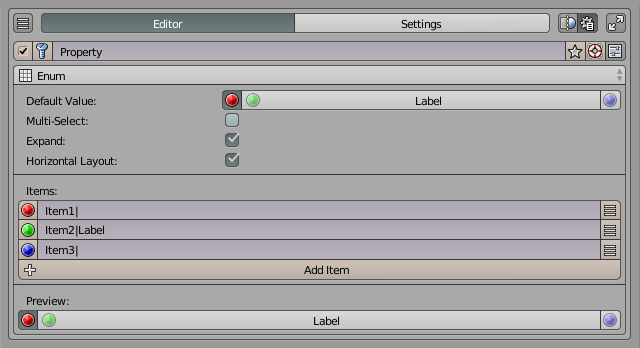

Property Editor¶
Property Editor は、PME 独自のプロパティを定義するエディターです。登録したプロパティはトグル / 数値 / 文字列 / 列挙 / ベクトルとして、Blender 標準のプロパティと同じ感覚で PME のメニュー / Pop-up Dialog / Custom スロットから利用できます。
構成¶
項目 |
値 |
|---|---|
スロット数 |
任意（1 行 ＝ 1 プロパティ + 付随関数の集まり） |
スロットタイプ |
Command（Getter / Setter / On Update / On Init 用の 1 行コード専用） |
対応するプロパティ型 |
|
Hotkey 設定 |
なし |
プレビュー |
なし |
詳細設定 |
Description / Poll |
値の保存先 |
Addon Preferences / Scene / Object / その他の Blender 型 |
エディター画面¶
トップバー¶
エディター画面の最上段、メニュー名の左右に並ぶ操作です。画面の見た目はエディターによって少し違いますが、項目の意味は共通です。
- 有効/無効:
メニュー全体を有効化/無効化します。無効化すると hotkey だけでなく、
open_menu()/pme.invoke_pm()などのスクリプト経路、登録済みメニューやパネル経路（Extend Panel / Side Panel / Hidden Panel Group）からも実行されなくなります。
hotkey だけを外したい場合は、メニューを無効化するのではなく Hotkey 設定 を編集してください。- プレビュー:
メニューをその場で表示して、レイアウトや並びを確認します。プレビュー中は実際の context でコマンドは実行されません。プレビューが用意されているエディター（Pie Menu / Pop-up Dialog / Regular Menu）でのみ表示されます。
- メニュー選択:
編集対象のメニューを切り替えます。アイコンは現在のメニュー種別（Pie / Popup / Regular / Modal …）を示します。検索や種別フィルターで絞り込んだ一覧が出ます。
- メニュー名:
メニューの名前です。表示用ラベルであると同時に、他のメニューや Python コードからこのメニューを呼び出すときの識別子になります。
open_menu("名前")で呼び出す場合も、ここで設定した名前を使います。
PME2 では MENU スロット経由のメニュー間参照に uid を持たせるようになり、MENU スロットや Pop-up Dialog / Floating Panel の Dialog リンクは名前を変えても壊れません。一方で、COMMAND / CUSTOM タブ内でopen_menu("名前")/draw_menu("名前")のように名前文字列で呼び出している箇所は、現状まだ名前ベースです。この経路の uid 化は開発中で、いまは PME 側で参照を追跡できないので、メニュー名を変更したらこれらのコードも合わせて直してください。- 被参照ボタン:
このメニューを参照している別のメニューがある場合に表示されます。クリックすると参照元の一覧が出て、そこからジャンプできます。Macro から別の Stack Key を呼んでいる、Regular Menu のスロットから Pop-up Dialog を呼んでいる、といった依存関係を追うときに使います。
- Tag:
メニューの分類・検索用ラベルです。クリックするとタグ編集ポップアップが開き、複数のタグを付けられます。
Tag を付けておくと、Pie Menu Editor の一覧画面で 絞り込み・グループ表示ができ、pm_enable_by_tag("名前", True)でセット単位での有効化にも使えます。Settings > General > Auto-Tag New Menus を有効にすると、現在のタグフィルタで新規メニューに自動でタグが付きます。- ドキュメント:
PME のオンラインドキュメント（このサイト）の該当ページを開きます。
- 詳細設定トグル:
Description（説明文）・Poll（実行可否）・そしてエディターごとの追加オプションのパネルを開閉します。詳細設定を持たないエディター（Hidden Panel Group）もあります。
詳細設定¶
- Description:
自作のマクロや複雑なコマンドを後で見返したとき、何のために作ったか分からなくなる。PME ではメニューにもスロットにも説明文を残せます。
右のスクリプトトグル を ON にすると、Description は Python 式として扱われ、毎回評価された戻り値が表示されます。現在のモードや選択数を反映した動的な説明文にできます。return f"Active: {C.active_object.name if C.active_object else '(none)'}"
説明文を書いていないメニューでも、tooltip は参照先のメニュー名を自動で表示します。書いておくと、その内容で上書きされます。共有時に意図が伝わる、後から見返したときに迷子にならない、というのが Description の目的です。
- Poll:
「今の Blender の状態で、このメニューを実行してよいか」を Python の式で判定する仕組みです。式の戻り値が
Trueならメニューが実行され、Falseなら hotkey や UI から呼ばれてもスキップされます。ao = C.active_object; return ao and ao.type == 'MESH'
Poll は hotkey 経由の呼び出しだけでなく、HOLD / TWEAK / CHORD、
open_menu()/pme.invoke_pm()などのスクリプト経路、editor preview、Popup Dialog や通常メニューの描画、Macro / Modal / Sticky / Floating Panel からの呼び出しでも確認されます。設定しておけば、現在の context では使えないメニューが別経路から実行されてしまうケースを防げます。右の から、よく使う条件をその場で追加できる Poll 補助メニューが開きます（モード判定・空 Poll の挿入・Cut / Copy / Paste など）。条件の書き方の入口は Poll Method の基礎 にまとめてあります。
プロパティ型¶
各プロパティ行で次の Blender API 型のいずれかを選びます。
BoolPropertyIntPropertyFloatPropertyStringPropertyEnumPropertyベクトルプロパティ
値の保存先（Store in）¶
各プロパティの保存先を Store in ... で選びます。既定では PME の Addon Preferences に保存されます。

Store in |
値の所有者 |
用途 |
|---|---|---|
Addon Preferences |
PME 側の保存コンテナ |
アドオン共通の保存値 |
Scene Instances |
各 Scene |
|
Object Instances |
各 Object |
オブジェクト単位の値 |
その他の型 |
その型のインスタンス |
Material / Brush / Node など |
Store in Object Instances を選んだ場合、そのプロパティは通常の Object プロパティと同様に扱えます。
C.object.MyProperty = True
Restore Default Value¶
Store in Addon Preferences のときだけ表示されます。有効にすると、保存済みの値ではなくデフォルト値で初期化されます。
関数¶

各プロパティに次の 1 行関数を割り当てます。
関数 |
呼び出されるタイミング |
戻り値 |
|---|---|---|
Getter |
UI が値を読むとき |
プロパティ型に一致する値 |
Setter |
UI が値を書き込むとき |
なし |
On Update |
値が変更された後 |
なし |
On Init |
プロパティの初期化時 |
なし |
関数を追加すると、初期状態では次のコードが入ります。
Getter
return self.get(menu, False)
Setter
self[menu] = value
On Update
print('On Update', menu, '=', repr(props(menu)))
On Init
print('On Init', menu, '=', repr(props(menu)))
関数仕様¶
props()¶
props() は PME の Addon Preferences 側の保存領域を扱うヘルパーです。self は現在の保存先、props() は PME 共通の保存領域、として区別されます。
value = props("MyProperty")
value = props().MyProperty
props("MyProperty", 10)
props().MyProperty = 10
Custom スロットからの使用例:
L.prop(props(), "MyBoolProperty", text=slot, icon='COLOR_GREEN' if props("MyBoolProperty") else 'COLOR_RED')
スクリプト規約¶
重要
Getter / Setter / On Update / On Init は 1 行で記述します。複数の処理が必要な場合は、三項演算子・短絡評価・補助関数の呼び出しで 1 行に収めます。
重要
Getter は常に Property Type に一致する値を返す必要があります。
BOOL→boolINT→intFLOAT→floatSTRING→strENUM→ 有効な enum 項目
None は返せません。値が無い場合は型ごとのフォールバックを返します（False / 0 / 0.0 / "" / 有効な enum 項目）。
Getter は PME メニュー表示時に限らず、Blender の再描画 / RNA アクセスでも呼び出されます。bpy.context 依存のコードを書く場合はフォールバック値の用意が必要です。
return float(self.location.x) if self else 0.0
応用的な使い方¶
既存 Blender プロパティをそのまま並べる¶
新規プロパティを定義せず、C.space_data.overlay.show_floor のような既存プロパティを直接 UI として並べたい場合は、Property Editor ではなく スロットタイプ Property を任意のエディターで使います。Property Editor は PME 独自プロパティの登録専用です。
Boolean トグルでメニュー間の状態を共有する¶
BoolProperty を 1 つ定義し、複数のメニューから props("MyToggle") で読み書きすると、メニュー間で状態を共有できます。Stack Key や Command スロットの分岐条件に利用できます。
open_menu("Tab Bar Commands", props(menu))
Custom スロットで色付きトグルを描く¶
Custom スロットの L.prop で、定義した BoolProperty に状態連動アイコンを付けて描画できます。
L.prop(props(), "MyBoolProperty", text=slot, icon='COLOR_GREEN' if props("MyBoolProperty") else 'COLOR_RED')
Slider¶

Color Widget¶

Direction Widget¶

Icon-Only Tab Bar¶

Directory Path¶

Object Instances にデータを持たせる¶
Store in Object Instances を選ぶと、プロパティは各 Object に保存されます。Object 自身の属性として読み書きできます。
C.object.MyProperty = True